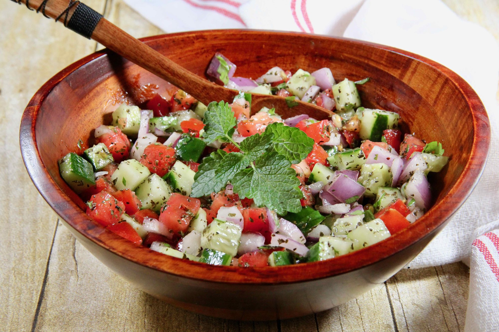

Shirazi Salad

Description
A tasty Persian salad which originated in the town of Shiraz in Southern Iran. Almost always served as a side dish, it's crunchy, bright, refreshing with a mild citrus-flavored dressing, and is served year-round.
Ingredients
Salad:
- 4 medium firm Roma tomatoes, finely diced
- 1 medium English cucumber, finely diced
- 1/2 cup diced red onion
- 1 tablespoon chopped fresh cilantro
- 1 tablespoon dried mint
Dressing:
- 1/4 cup freshly squeezed lime juice
- 3 tablespoons extra-virgin olive oil
- 1/2 teaspoon salt
- 1/2 teaspoon freshly ground black pepper
- 1/4 teaspoon sumac (Optional)
- 1 sprig of fresh mint (Optional)
Steps
- Combine tomatoes, English cucumber, onion, and cilantro in a large bowl. Sprinkle with mint and transfer to the refrigerator for flavors to meld, at least 30 minutes.
- Whisk together lime juice, olive oil, salt, pepper, and sumac in a small bowl until well combined. Drizzle dressing over the salad right before serving. Toss well to combine, and garnish with fresh mint leaves.